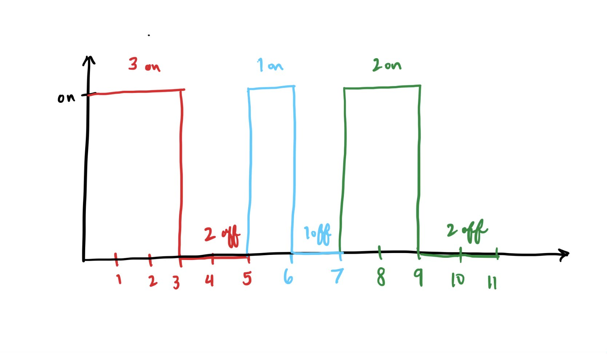
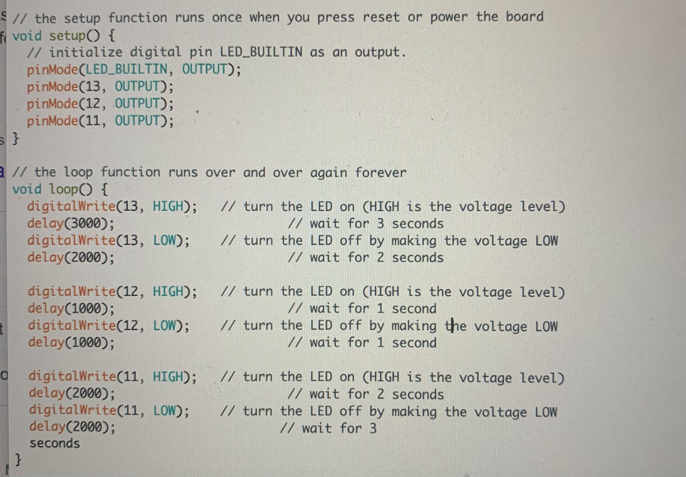

Alida's Assignment 1: Blink!

Below is the schematic, circuit and firmware! Normally to calculate for the type of resistor, you would use Ohm's Law V=I X R to calculate for resistance, but in this case Nadya mentioned it was fine to use 220 ohms because we are working with such a small voltage.

